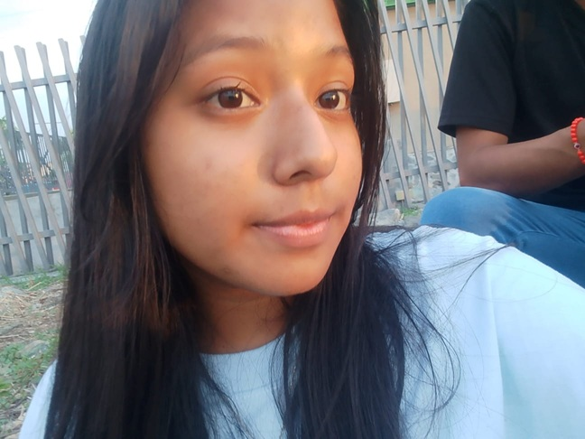
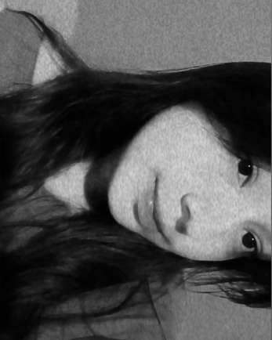
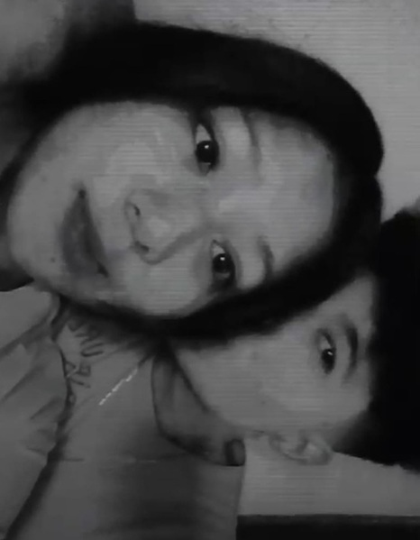

Todo empezo cuando vi una historia tuya de facebook, la cual me quede mirandote por un rato lo linda que era esa chica
no podia dejarla de ver, Luego reaccionaste a una historia mia y te escribi que Muchas Gracias por la reaccion y desde ese dia empezamos hablar diariamente.
aquel entonces empezaste siendo el chat que hasta el dia de hoy no me canso en escribirle a diario sin preguntarte Como estas?, Ya comiste? Ya te bañaste?
con muchas ganas de que algun dia fueras mi chica. tu tambien respondias amablemente y eso me gusto, Ayudarte cuando te sientes triste, de mal animos, malos humores, Yo me proponia ayudarte para que te sientas mejor
que te conoci en junio me he sentido tan bien y alegre contigo, Te has preocupado por mi y me has preguntado cosas que nunca nadie me lo preguntaba a diario y agradezco y valoro mucho eso de ti. No nos hemos dejado de escribir un solo dia a pesar de todo
El dia que me mandaste una foto tuya me alegre mucho al saber que te podia ver diariamente en mi telefono, Cuando me enviaste un beso ya tenia ganas de que me lo des en persona. Lo escuchaba a diario. Me gustan un monton tus besos, Con el tiempo seguimos hablando, Eres una chica muy lista, muy bonita, preciosa, una buena chica.
Tienes problemas con tus padres al igual que yo asi que entiendo las veces que te enojas con ellos. Siempre quedabamos en vernos pero no se podia dar ese encuentro entre nosotros, Mis ganas de verte son tan grandes que aveces me ponia triste cuando me decias que no ibas a poder venir.
Hablar contigo me ayudo a olvidarme de muchas cosas que tenia en mente. Te agradezco. Lo que mas me gusta de ti son cosas especiales, Tu forma de ser conmigo o con las personas en general, Tu Caracter, Tu Egocentrismo, No soy de ver el fisico, Pero tienes unos ojos muy preciosos que me gustan.
Tu cabello es super lindo sea que tengas el cabello largo o corto es muy lindo. Tu nariz, me gusta mucho a pesar que tu digas lo contrario. Tus cachetitos son muy preciosos los quiero morder. Eres una chica perfecta. Pero.. Lo que mas me encanta de ti es el corazon que tienes.
y tus labios no sea quedan atras esos tmb me gustan.

COSAS QUE ME GUSTAN DE MI NOVIA
ME GUSTA SU APRECIO Y CARIÑO HACIA Mi,
ME GUSTAN SUS CACHETITOS LINDOS.
,SU CABELLO ES MUY PRECIOSO SEA LARGO O CORTO
,SUS LABIOS, SON TAN PRECIOSOS Y RICOS
,SU NARIZ, A PESAR QUE NO LE GUSTE A ELLA ES UNA PARTE MUY LINDA DE SU CUERPO.
,TIENE UNOS OJOS PRECIOSOS QUE BRILLAN MAS QUE LAS ESTRELLAS Y QUIERO QUE SE LOS DE A MIS NIÑOS
,LO MAS IMPORTANTE, LA MANERA EN LA QUE NOS TRATAMOS ME GUSTA ESO Y QUE SEA BUENA PERSONA Y UN CORAZON PRECIOSO

¿DE VERDAD TE AMO?
YO CON LA MANO EN EL CORAZON DIGO QUE TE AMO Y QUE TE APRECIO MUCHO. A PESAR DE LAS VECES QUE ME COMPORTO MAL HACIENDOTE SENTIR MAL O ENOJADA CONMIGO NO PUEDO HABER UN DIA QUE NO PIENSE EN TI, CUANDO TE ENOJAS CONMIGO BUSCO LA MANERA DE SOLUCIONAR ESE PROBLEMA
PORQUE NO QUIERO Y NO ME GUSTA QUE MI CHICA SE ENOJE CONMIGO, SE QUE AVECES LO HAGO Y PUES ME SIENTO MUY MAL Y ES MUY INMADURO DE MI PARTE HACERTE ENOJAR POR COSAS SIN SENTIDO, NO ME TOMES EN SERIO CIERTAS COSAS PORQUE CONTIGO NO ME ENOJARIA JAMAS, YO TE AMO MUCHO Y AUNQUE NO LO CREAS DOY GRACIAS QUE SEAS MI CHICA, ALGUIEN CON UN CORAZON TAN LINDO, UNA CHICA SIN VICIOS
ESO ME DIO MAS INTERES EN TI, ALGUIEN QUE QUIERE SUPERARSE CADA DIA PARA SER MEJOR, ERES MUY LISTA Y ESO ME ATRAE MAS HACIA TI, SE QUE NO NOS CONOCEMOS MUCHO PERO QUIERO DARME LA OPORTUNIDAD DE CONOCERTE Y TU CONOCERME A MI. DESEO MUCHO PASAR TIEMPO A TU LADO PORQUE ERES MI NOVIA, Y SI TE DIGO QUE DESEO ALGO SERIO CONTIGO ES PORQUE LO DESEO, QUIERO PASAR MI TIEMPO CONTIGO Y NO DESEO A NINGUNA CHICA MAS CUALQUIERA DE ESAS QUE NO VALORAN A NADIE.
SE QUE ME DIJISTE QUE NADA ES PARA SIEMPRE, PERO DESEO ESTAR CONTIGO MUCHO TIEMPO, EXPERIMENTAR COSAS QUE NUNCA HAYA HECHO CON NADIE Y LAS DESEO CONTIGO, COMPARTIR MOMENTOS CONTIGO, DESEO ESTAR MUCHO TIEMPO CONTIGO Y HARE LO NECESARIO PARA QUE ESTEMOS JUNTOS MUCHO TIEMPO. TE DESEO LO MEJOR SIEMPRE Y TE APOYO EN TODO LO QUE ESTES DISPUESTA A HACER
YO TE AMO MUCHO Y TE LO RECORDARE TODOS LOS DIAS LO MUCHO QUE TE AMO Y LO MUCHO QUE ME GUSTAS, TE VALORO LO SUFICIENTE, TE DARE EL AMOR Y EL CARIÑO MAS NOBLE QUE NUNCA NADIE TE LO HA DADO, SIEMPRE ESTARAS EN MI MENTE Y ERES MI NIÑA. MI BEBE. MI PRINCESA. MI NOVIA. MI GUERRERA. UNA DIOSA. Y EN UN FUTURO MI GRAN ESPOSA.
ESTO ES TODO LO QUE PUEDO DECIR EN ESTA PREGUNTA. TE AMO MUCHO Y FELIZ SAN VALENTIN MI AMOR.

¿CUAL ES MI META CONTIGO?
DESEO ESTAR MUCHO TIEMPO CONTIGO Y YO SE QUE TU TAMBIEN DESEAS LO MISMO, MEJORARE PARA TI SERE MEJOR PERSONA, DESEO ESTAR CONTIGO, VIVIR CONTIGO, CONOCER A TUS PADRES AUNQUE SEA DIFICIL, SALIR CONTIGO, COMPARTIR CONTIGO, AMARNOS JUNTOS, LLORAR JUNTOS, APOYARNOS, Y QUE NO NOS DEJEMOS DE AMAR, DESEO TODO CONTIGO PORQUE TE AMO MUCHO ESPERO Y ME ENTIENDAS.
FELIZ SAN VALENTIN
SE QUE NO SOY ALGUIEN PERFECTO Y CONOZCO MIS ERRORES, PERO HOY TE DESEO UN FELIZ DIA Y QUE SEPAS QUE TE AMO MUCHO CON TODO MI CORAZON, ERES MUY ESPECIAL PARA MI Y YO QUIERO TAMBIEN SER ESPECIAL PARA TI Y QUE ME AMES COMO YO LO HAGO, ADORO MUCHO TU AMOR HACIA MI Y QUIERO QUE NUNCA LO DEJES. ERES SUPER PRECIOSA ME GUSTAS MUCHO PASALA BIEN CON TU MAMI Y TU PAPI QUE SON SUPER IMPORTANTES PARA TI. ESTE DIA TE DOY ESTE REGALO UNA PAGINA JSJASJ QUE ES ALGO QUE APRENDI Y PARA MI ES UN DETALLE BONITO AUNQUE NO SEA FISICO. TE DESEO FELIZ DIA MI AMOR TE AMO MUCHO NUNCA LO OLVIDES
ATT: TU CACHETON